In Hierarchical RL, typically, different sub-policies handle different tasks that might be hierarchical in nature. Instead, we want to decompose the available multi-dimensional continuous action space across sub-policies while trying to learn an overall global task. We aim to experiment with variants of different hierarchies in environments pertaining to locomotion where multiple joints (our action space) are controlled. We aim to perform this study on actor-critic based algorithms, and experiment with a hybrid approach involving hierarchical and modular action policies.
Hierarchical Reinforcement Learning [1] introduces the Hierarchical-DQN (h-DQN) framework, which combines hierarchical value functions operating at different temporal scales with intrinsic motivation. The high-level controller selects goals, while the low-level controller learns policies to achieve these goals, effectively decomposing the action space hierarchically. The approach demonstrates improved exploration and learning efficiency in environments with sparse rewards, such as the Atari game Montezuma's Revenge.
DDPG is an off-policy reinforcement learning algorithm that handles continuous action spaces. It follows an actor-critic framework and combines the advantages of policy gradient methods as well as DQNs. It was introduced by Lillicrap et al in 2015[2]. A replay buffer is used that stores tuples of consecutive action and states. Specifically, tuples of the form (state, action, reward, next_state, terminating_condition). While training, random mini-batches are sampled from the replay buffer to train the network. For stable training, time-delayed copies of both the actor and target networks are used. While training, for each tuple in the replay buffer, ‘state’ and ‘action’ values are fed through the main actor and critic networks, and the ‘next_state’ value is fed to the target actor network to obtain the ‘next_action’ values. Subsequently, both the ‘next_state’ and ‘next_action’ values are fed to the target critic network to obtain a Q(s’,a’) value. The critic loss is formulated in a manner to reduce the difference between the Q(s,a) value estimates with the target Q(s’, a’) values produced by the target critic network. The structure of the loss follows the bellman update equation.
The primary objective of our project is to explore and compare the performance of policies that decompose the action space. In the actor-critic framework, this amounts to having a separate actor network for each dimension of the action space. In the case of environments like ‘Bipedal Walker’ and ‘Ant’, this results in creating separate actor networks that master the movements of each joint. The actions performed by each joint are aggregated and sent to a ‘global’ critic network to accurately determine the Q(s,a) values. We experimented with various permutations of actor-critic networks with policies decomposed based on the action space:
This refers to vanilla DDPG and acts as our baseline model, wherein a single policy (actor) outputs the entire action space.
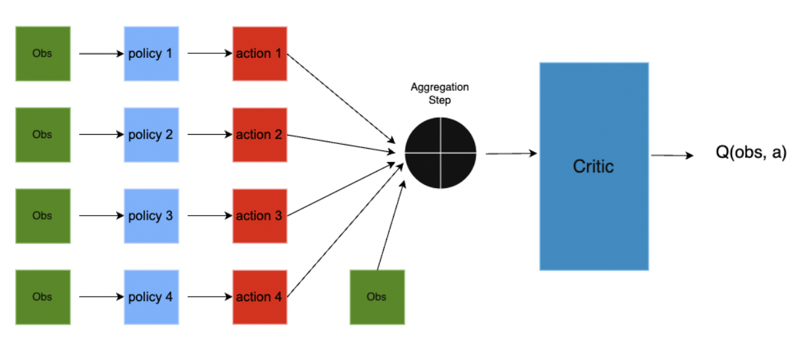
Here, there is a separate policy (actor network) for each joint. They all take the observation/state separately as input and output the action of their respective joints. The actions are then aggregated along with the observation to pass into the critic network for fetching a Q value. In the image, the actor networks are denoted by policy networks. All observations in the image below are of the same time step.
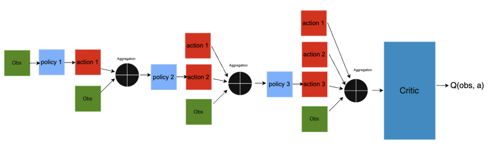
In this approach, there is a separate actor network for each joint. The first actor network takes the observation as input and outputs the corresponding joint’s action. The observation and output action is then aggregated and sent to the second actor network. The second actor network’s action is then aggregated to the first actor network’s action and observation and sent to the third actor network. Essentially, the actor networks make decisions in a hierarchical manner, where the next dimension’s actions are dependent on the previously computed actions for that particular time step. Finally, all actions are aggregated and sent to the critic network.
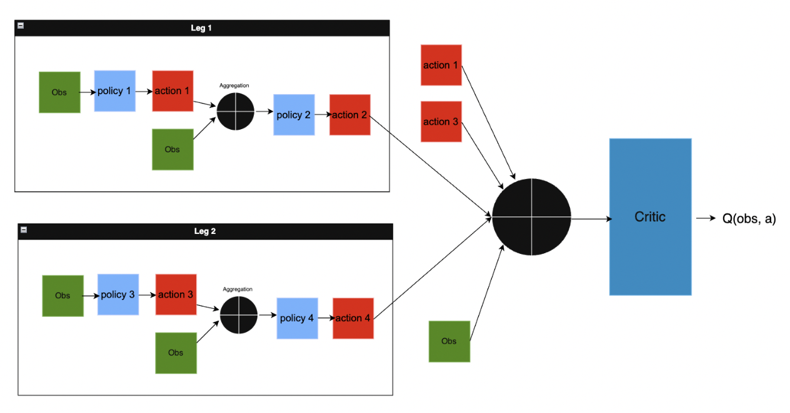
In this approach, the idea of both the modular and hierarchical approaches is combined. We observed that for both the Ant and Bipedal Walker environments, there are multiple legs that each have two joints. Hence we came up with the following strategy: (i) each leg’s actions would be decided hierarchically such that the hip joint’s action would be sent to the knee joint as input (ii) the actions of all legs would be aggregated in a modular fashion to be sent to the critic network for processing.
We’ve leveraged Fabio Pardo’s Tonic RL library for setting up our environments and leveraging on the existing RL algorithms to develop our modular, hierarchical and hybrid approach on top of DDPG. Environments To demonstrate hierarchical and modular characteristics, it is imperative to have a multi-dimensional action space. We are leveraging OpenAI's Gym for Bipedal Walker v3 and Bullet’s Ant environment to demonstrate our algorithm’s results. These environments are relatively lightweight and feasible to run in limited compute, while being appropriate for the task
We compare the performance of the monolithic vanilla approach with modular, hierarchical and hybrid approaches on both environments using DDPG. For Bipedal Walker, all algorithms ran for 2 million training steps, with test episodes evaluating each epoch. Each epoch had 20000 steps. For Ant, all algorithms ran for 1.5 million training steps, with test episodes evaluating each epoch. Each epoch had 20000 steps.
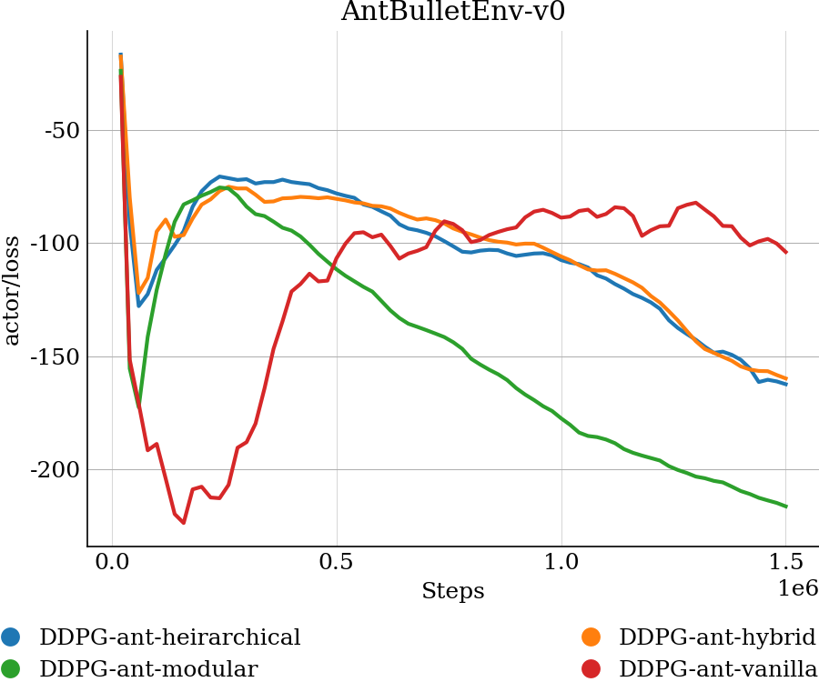
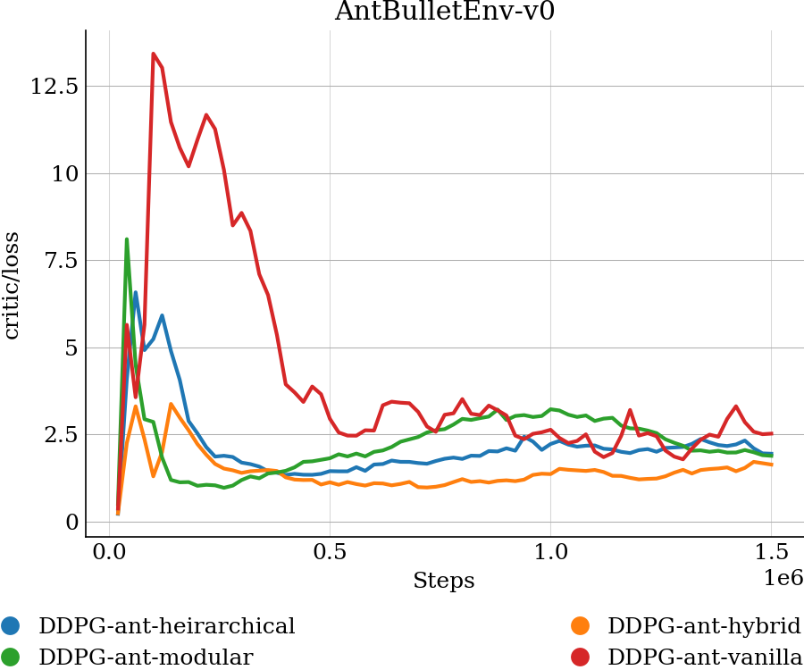
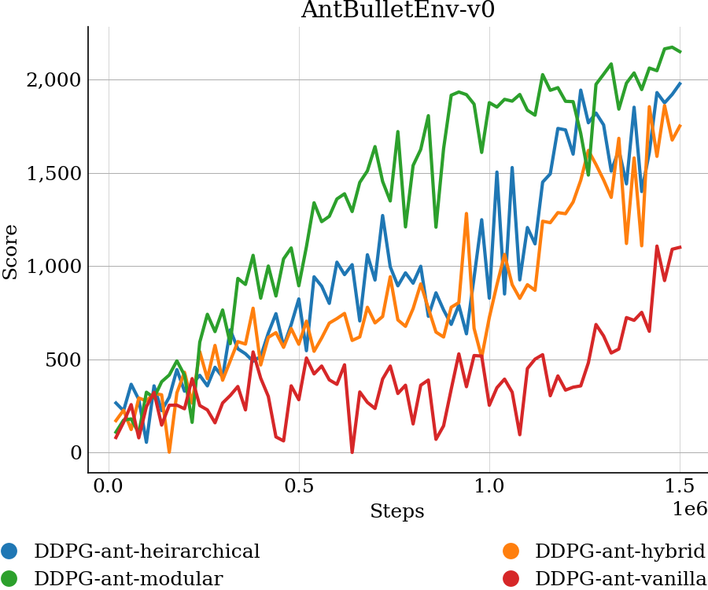
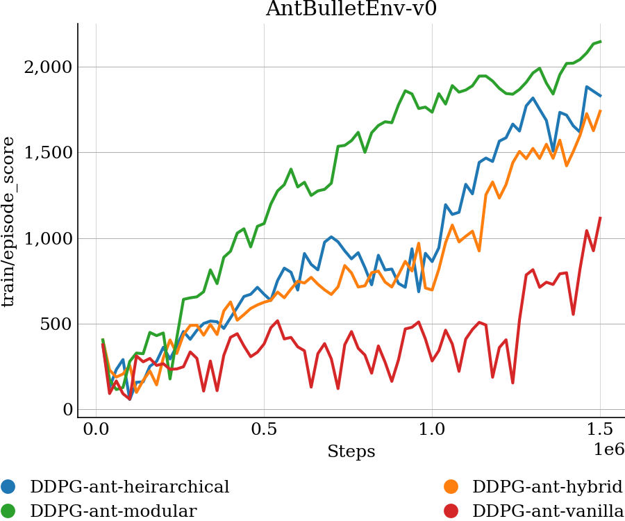
Based on the test ep scores, the modular approach seems to perform the best. Its actor loss reduces the fastest and settles at the smallest values, meaning the policy is finding actions the critic rates highly. Modular DDPG achieves the highest training and test episode scores and maintains the full 1600-step episode horizon for most rollouts, indicating it keeps the ant upright and moving for the maximum duration. The hierarchical and hybrid agents outperform the vanilla DDPG approach. Both show smoothly decreasing actor loss and critic loss, and their reward values climb steadily. Although its actor loss falls, the vanilla approach’s critic’s poor estimates mislead the policy, resulting in lower episode scores and frequent early terminations. Hence, decomposing the 8-joint ant problem, either fully (modular) or partially (hierarchical/hybrid), gives the critic clearer gradients and lets the policy explore more effectively, while the single monolithic actor-critic pair of vanilla DDPG struggles with coordination in this high-dimensional action space.
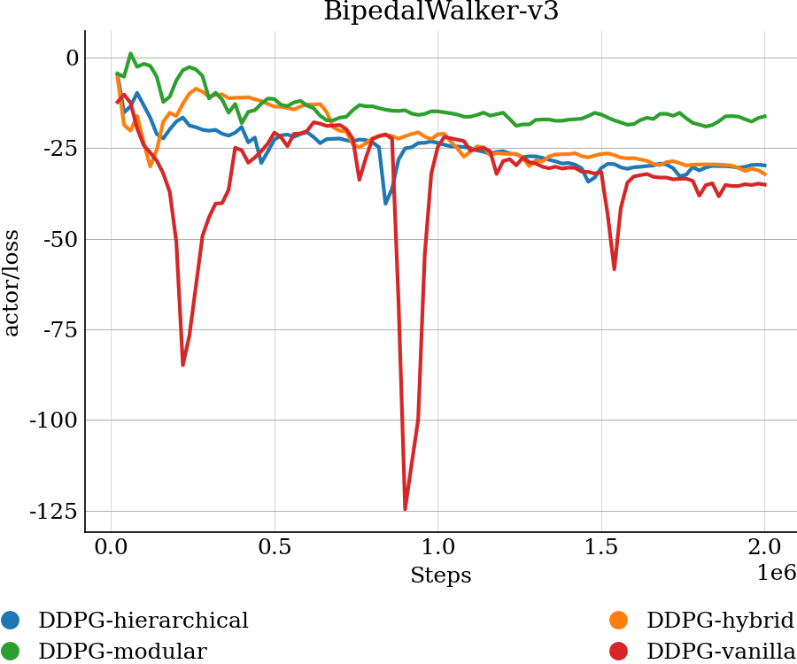
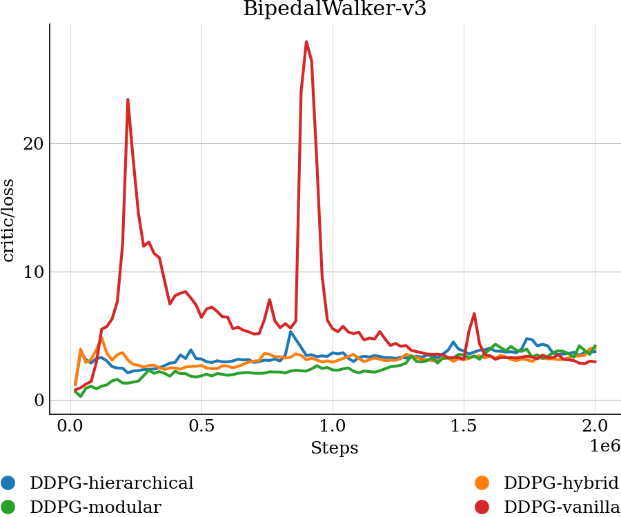
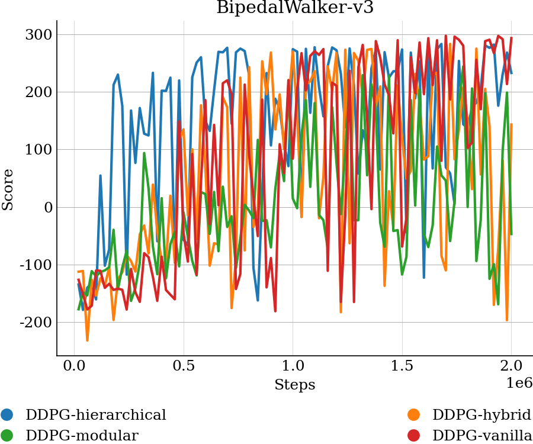
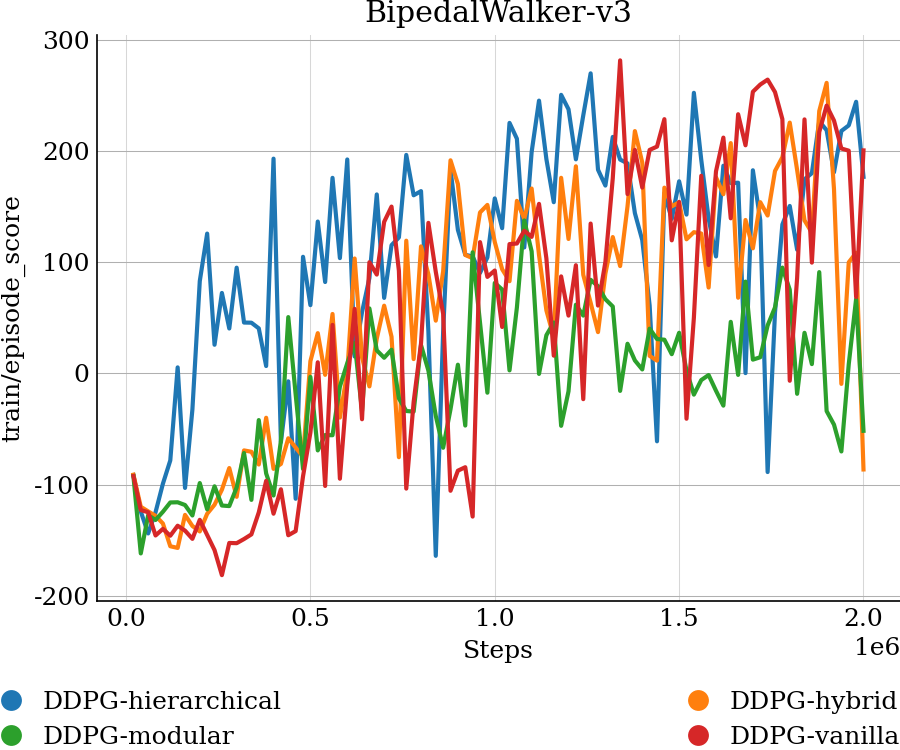
Here, for vanilla DDPG, although its critic sometimes goes up (loss goes up to > 20) and the actor loss goes down to -125, by about 1 million steps the critic saturates down and the policy’s train and test episode scores climb up to the 250 to 300 range. The hierarchical and hybrid variants are similar to the vanilla DDPG values. Both groups keep their critic losses in the 3 to 6 range throughout training and their actor losses go down toward -30, suggesting a slower policy improvement process compared to vanilla’s unstable spikes. But we also observed that the modular agent struggles. Its critic stays well-behaved but the actor loss is the highest. Its episode scores are lower and seem to be unstable, with many short test rollouts based on the episode lengths we observed. In the Bipedal environment, coordination amongst all joints is imperative due to the importance of maintaining balance. Through the graphs we can confirm this as vanilla DDPG and hierarchical DDPG outperform the other modular approaches. In the hierarchical variant, the last actor is aware of the previous actions, allowing for better coordination.
Overall, our results indicate that while modular and hierarchical variants of DDPG can offer significant advantages in high dimensional control tasks like Ant, they may struggle in lower-dimensional environments like Bipedal Walker, where tight coordination across action dimensions is critical. Modular DDPG outperforms others in Ant by decomposing control into manageable sub-policies, resulting in better stability. However, in Bipedal Walker, the same decomposition hinders fine grained coordination, leading to performance worse than the monolithic vanilla DDPG approach. Finally, we can conclude that the effectiveness of modularization is task-dependent, benefiting complex multi-joint control but potentially harming simpler, tightly coupled movement tasks where balance is important.
BibTex Code Here